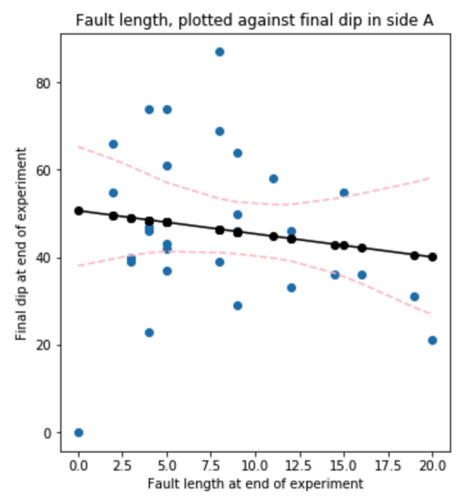
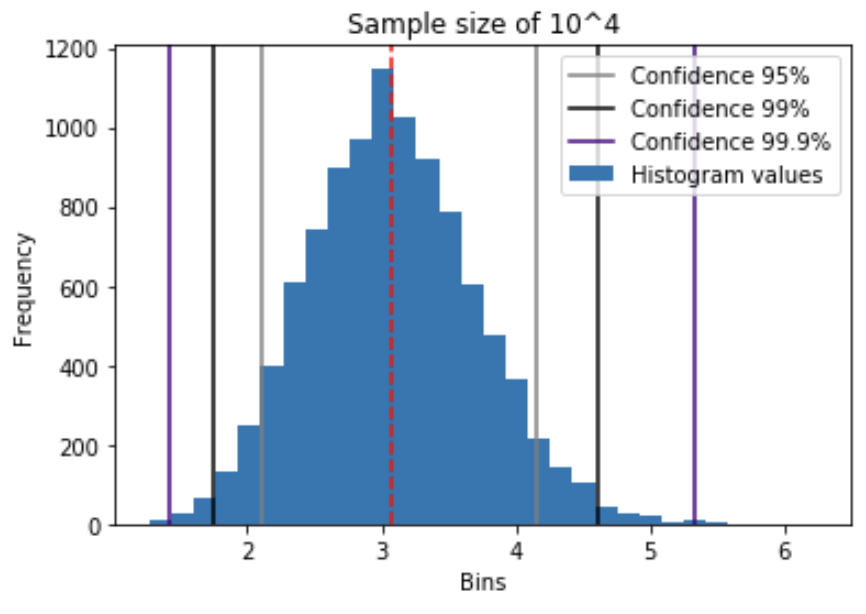
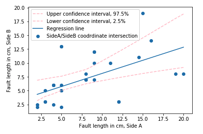
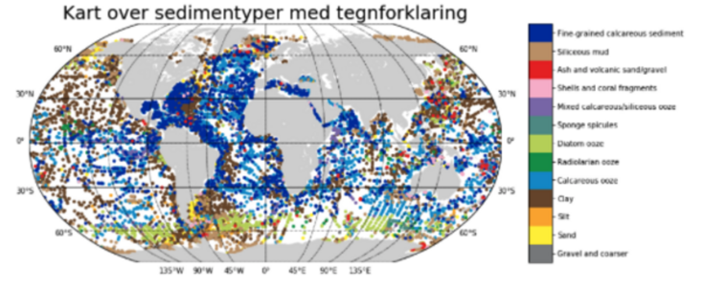
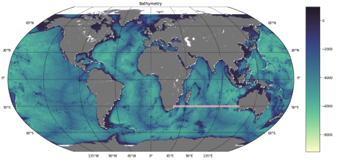

I am a geoscientist driven by my passion for data. Through my studies, I have fine-tuned my data-analysis capabilities. This being either driven through writing code, management of geospatial data in ArcGIS or handling of subsurface data in Petrel. Currently a MSc student in Geology at the University of Bergen. My exchange semester in the spring of 2020 was spent at the University of Ghana, Legon.
In my master project, I will perform synthetic seismic modelling on plastermodels/field-analogues for a better understanding of fault geometries in the subsurface.

Term paper in GEOV302, in this paper regression and picture analysis of seismic images created from plaster models was conducted.

The GIS-analysis conducted in this project was done to assess waterdamage potential in the Bergen area.

Project/Assignment about bootstrapping and regression done in GEOV302 (Dataanalysis in Earth Science).

Project/Assignment about regression done in GEOV302 (Dataanalysis in Earth Science).

This document outlies how a plotting of IODP sediment cores has been conducted. Observations are plotted first then lithologies are plotted.

This document outlies how bathyrmetry data and a transect has been created. Following this a plot has been created to show different lithologies across the transect. Data used is sedimentological core data from the IODP expedition dataset